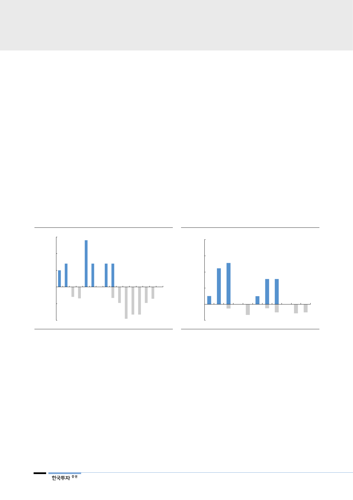

석탄은 환경에 좋지 않고
작년 6월 문재인 대통령의 탈원전 ∙ 탈석탄 선언으로 석탄화력과 원자력 발전의
입지는 더욱 좁아지고 있다. 먼저 환경에 대한 우려로 신규 투자계획에서 석탄의
이름은 지워지고 있다. 파리기후협약에 맞춰 이산화탄소 배출을 줄이는 노력이
강화되고 있다. 여기에 미세먼지 관리 종합대책이 구체화되면서 노후 석탄발전소
는 3월부터 6월까지 봄철 가동이 중단된다. 정부는 30년 이상 된 발전소 7기를
조기에 폐지하는 한편 건설중인 신규 설비도 LNG 발전으로 전환시킬 계획이다.
원자력은 위험할 수 있어
입지 좁아진 기저발전
2011년 후쿠시마 원전사고를 계기로 잠재적 위험성과 안전비용을 감안하면 원전
이 값싼 에너지가 아닐 수 있다는 인식이 선진국을 중심으로 확산되고 있다. 우리
나라도 2013년 원전 비리에 이어 2016년 경주 지진을 겪으면서 원전 의존도를
낮출 필요성이 부각되고 있다. 안전점검 및 정비강화로 비용부담이 커지고 가동
률은 떨어지면서 원전의 경제성에 대한 기대치는 이미 낮아졌다. 특히 고리 1호
기와 월성 1호기 가동이 정지되면서 그동안 과소평가되었을 가능성이 높은 사후
처리비용을 걱정해야 하는 시기에 접어들었다. 정부는 이러한 고민을 반영해 기
존 원전의 수명 연장과 2024년 이후 신규 도입을 불허할 방침이다.
[그림 14] 2023년부터 수명 만료된 원전 폐로 본격화
(MW)
3,000
8차 전력수급계획
2,000
1,000
0
(1,000)
신규가동 원전
가동정지 원전
(2,000)
2015
2018F 2021F 2024F
자료: 한국수력원자력, 산업통상자원부, 한국투자증권
2027F
2030F
[그림 15] 노후 석탄화력 발전소 조기 폐쇄할 계획
(MW)
8,000
8차 전력수급계획
6,000
4,000
2,000
신규가동 석탄발전소
0
(2,000)
2015
2017 2019F
자료: 산업통상자원부, 한국투자증권
가동정지 석탄발전소
2021F 2023F 2025F
에너지 대안으로
재생에너지보다 먼저
부각되는 LNG
정부는 기저발전의 빈자리를 가스와 재생에너지로 채워갈 방침이다. 신규 원자력
과 석탄 발전소 건설은 백지화됐기 때문에 정책이 전면 수정되지 않는 이상 장기
적으로 기저 설비용량은 줄어든다. 정부는 원자력과 석탄 발전량 비중을 2017년
77%에서 2030년까지 60%로 낮출 것이다. 대신 현재 한자리수에 불과한 재생
에너지의 발전량 비중을 2030년까지 20%로 높일 계획이다. 이를 위해서는 설비
용량을 현재의 4배로 늘려야 하며 90조원 이상의 대규모 투자가 필요하다.
하지만 재생에너지는 에너지 효율이 떨어지는 한계를 해결해야 한다. 원전과 비
교했을 때, 2017년 전세계 태양광의 설비용량은 유사한 규모였으나 실제 발전량
은 1/6에 불과했다. 무엇보다 재생에너지는 날씨와 같은 환경적 요인에 따라 일
정한 전력수급이 어렵다. 이러한 현실적인 문제로 인해 2024년부터 줄어들 기저
발전을 대체하지 못할 경우에 대비하려면 유일한 대안은 가스밖에 남지 않는다.
8